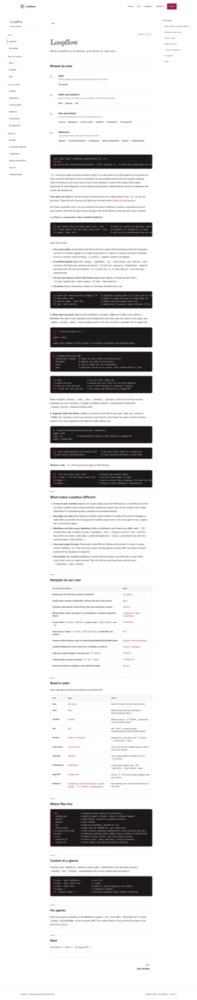
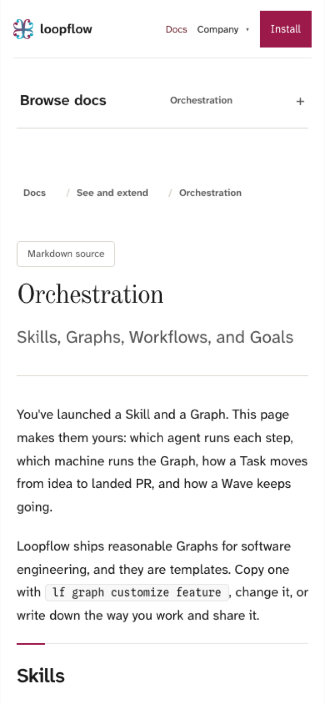
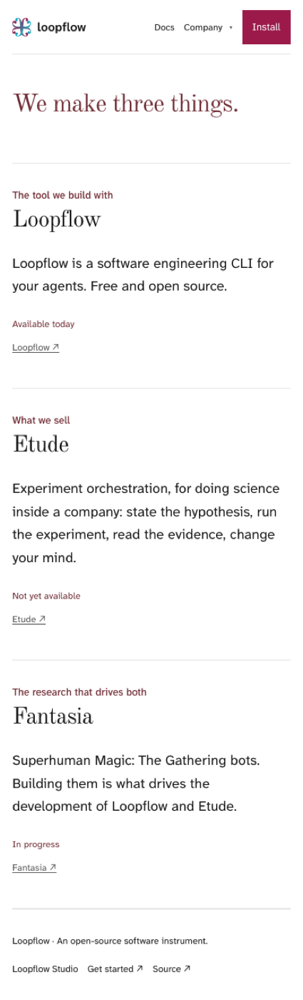
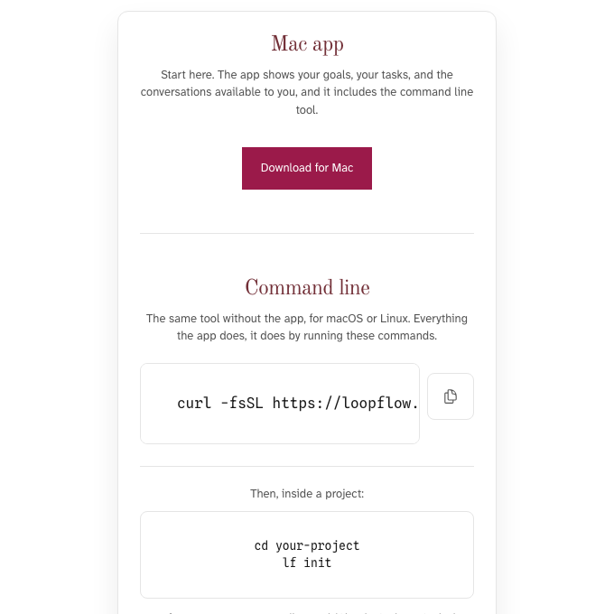
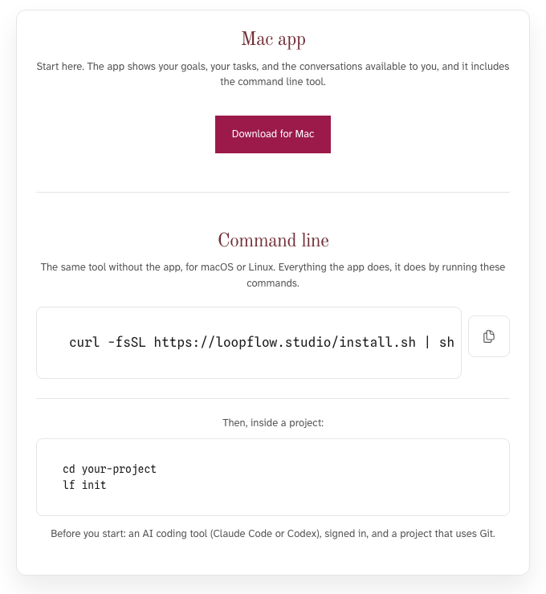
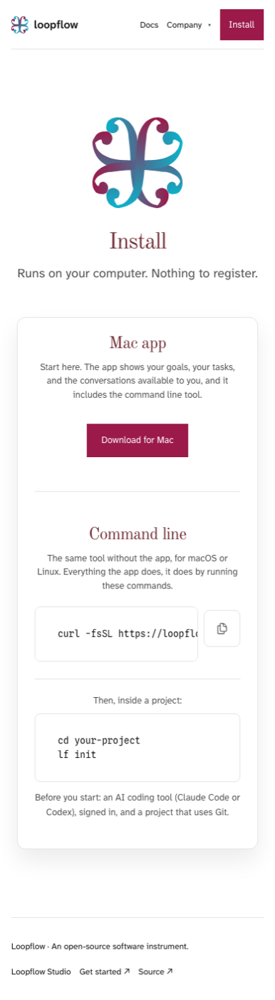
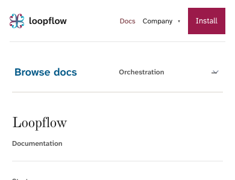
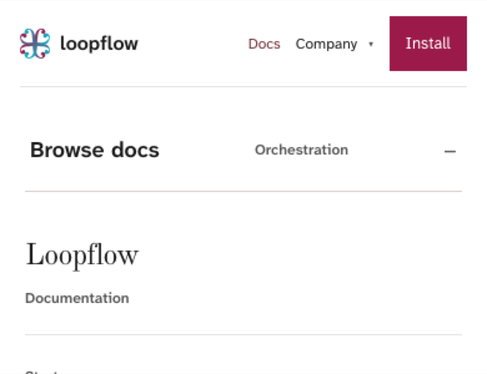
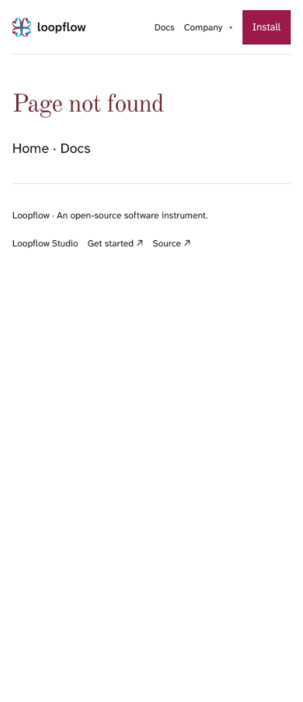

The branch site served on port 5077 (PORT=5077 uv run python main.py), driven with headless Chromium through the website venv's Playwright, as a visitor: following links, Tab, clicks, the clipboard.
Crawled every internal link starting from /, /docs, /download and /architecture: 73 URLs, all 200, none broken. On every HTML page at 1440: no console or page errors, no failed requests, no request to Google Fonts, the h1 is in Old Standard TT, the shared bar and footer are present, and every serif element is ≥24px with common ligatures off. At 390 (light) and in OS dark mode: no page overflows sideways. The .md/.txt agent sources answer as plain text, without the frame, as intended.
The workflow card's steps match rust/loopflow-definitions/src/builtins/task/graph/{feature,code,research}.yaml (ship-review, not the plan's human-review: the YAML renamed it, and the card and its test follow the YAML).



At 1440 the card is capped at 420px, so the box showed curl -fsSL https://loopflow. and the rest needed a sideways scroll (main's card overflowed instead). The card now caps at 640px and the command box fills the row beside the copy button; the whole command shows at 1440 and scrolls inside its box at 390. The "Then, inside a project" commands centered line by line; code boxes are now left-aligned.



It copied silently (an inline onclick), and its focus outline sat at 0px: transition: all was animating the outline in. It now uses the homepage's data-copy script: clicking shows "Copied", then the icon returns; the clipboard held curl -fsSL https://loopflow.studio/install.sh | sh. Its transition covers only background and border, so the ring shows on focus.
Tabbing through /, /download and /docs: the skip link, every docs sidebar link and every docs content link showed Pico's translucent blue ring (rgba(2,154,232,.5) 0 0 0 2px) inside the wine outline. One rule now gives links, buttons, summaries and focusable code a 2px wine outline with no box-shadow; the two duplicate docs focus rules went. After: no focused element has a colored box-shadow. The bar and homepage keep their 3px ring.
Opening "Browse docs" at 390 turned the label Pico blue (rgb(1,88,135), outside the palette) and drew Pico's chevron over the "−". It now stays --text closed, open and focused, and shows only + / −. A sweep of every page at both widths finds no other blue in color, background, border, outline or shadow.


/gone answered Starlette's bare 404 Not Found text. It now answers 404 with a site page: the bar, "Page not found", links to Home and Docs, the footer. Agent markdown misses (/docs/nope.md) still answer the plain-text nearest-match list.

Every page carried three viewport meta tags (FastHTML's default plus two of ours). Ours went; one remains, with viewport-fit=cover.
uv run --no-sync python ../scripts/test_network.py uv run --no-sync pytest tests/ -q in website/, LF_* unset, stdin closed: 97 passed. New: keyboard focus shows one ring on /, /download, /docs; the install command fits at 1440; the copy button copies and says so; an unknown page is a site page.render_architecture_html.py --check: passes after regenerating docs/dev/index.html.!important in style.css: 0. Raw colors below :root: 0./static/fonts/.cdn.jsdelivr.net/npm/@picocss/pico@latest: an unpinned third-party stylesheet on every page. A Pico release can restyle the site overnight, and most of the resets fixed here exist to undo it. Pre-existing; noted in scratch/questions.md.feature and "One stop." under code (which shows two stops) — copy left word for word, already in questions.md.